Diseño y confección exclusivo de Trajes de Mariachi, Camisolas bordadas y moños charros. Diseñados a la medida con acabados premium en bordados dorados y metalicos.
Ver Catálogo de Productos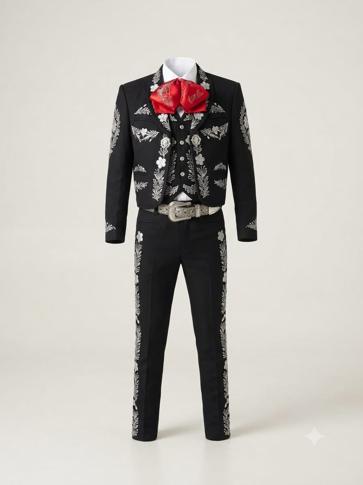
imperialConfeccionado en paño fino azabache. Presenta finos bordados de grecas charras en hilo metálico plateado sobre chaquetilla, chaleco, solapas y pantalon. Incluye herrajeria plateada.
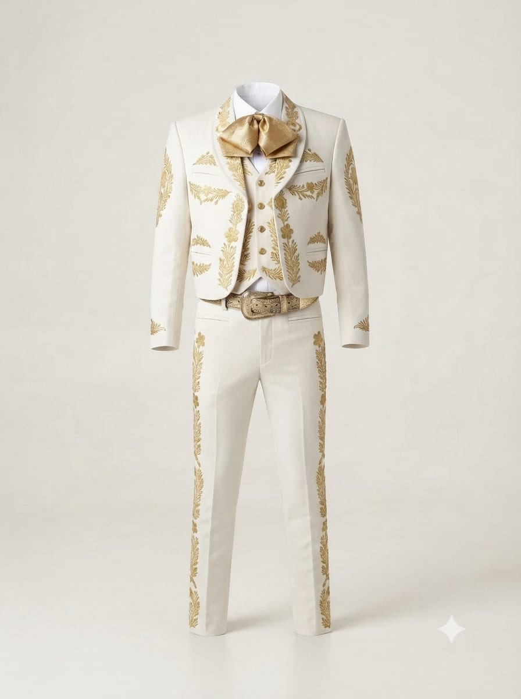
imperialConfeccionado en paño fino Marfil. Presenta finos bordados de grecas charras en hilo metalico dorado sobre chaquetilla, chaleco, solapas y pantalon. Incluye herrejeria dorada.
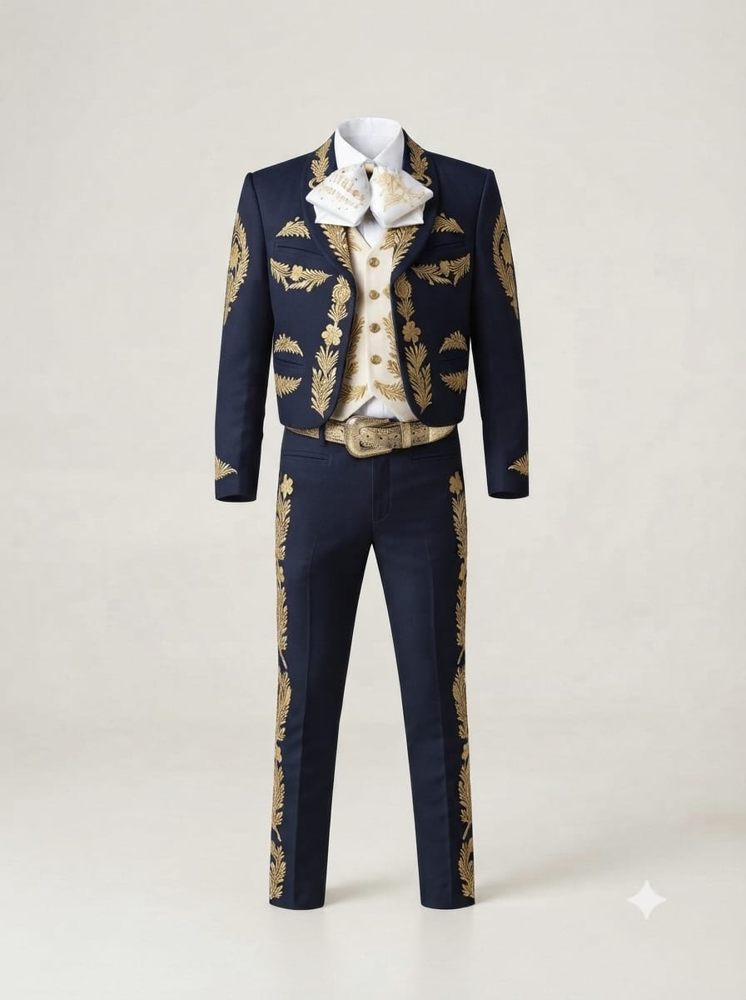
imperialConfeccionado en paño fino Marfil. Presenta finos bordados de grecas charras en hilo metalico dorado sobre chaquetilla, chaleco, solapas y pantalon. Incluye herrejeria dorada.
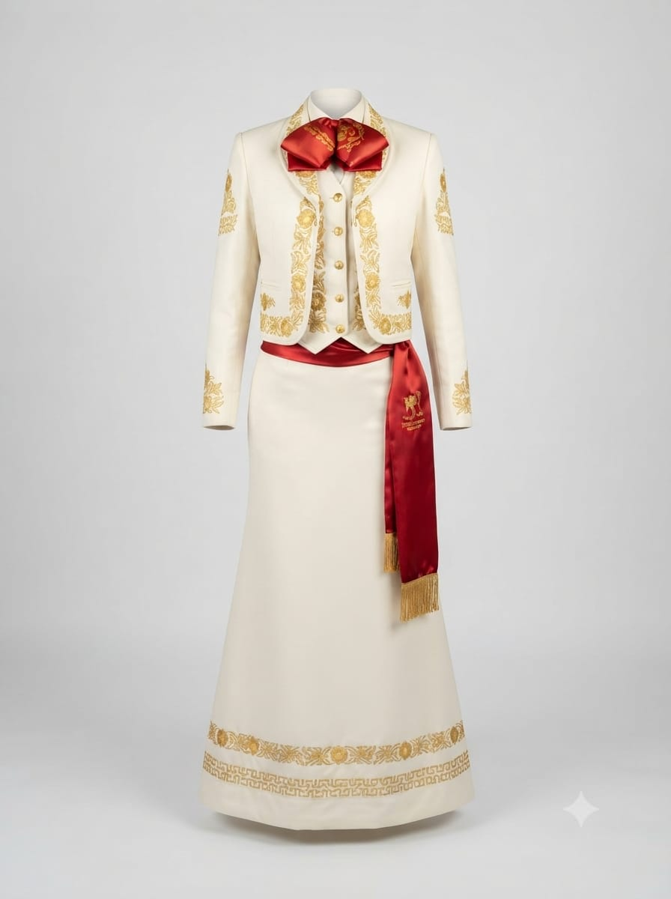
imperialConfeccionado en paño fino Marfil. Presenta finos bordados de grecas charras en hilo metalico dorado sobre chaquetilla, chaleco, solapas y pantalon. Incluye herrejeria dorada.
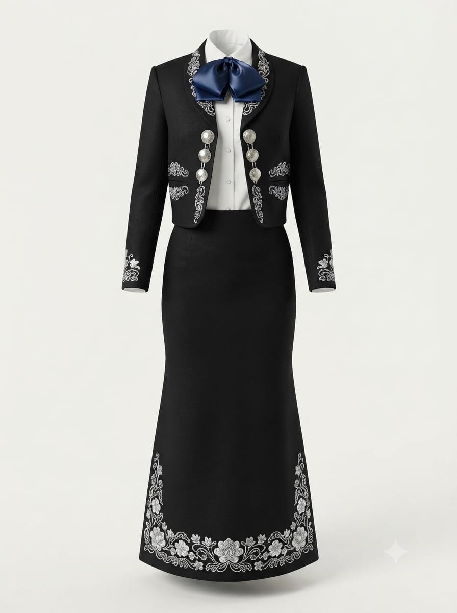
imperialConfeccionado en paño fino Marfil. Presenta finos bordados de flores charras en hilo metalico plateado sobre chaquetilla, chaleco, solapas y pantalon. Incluye herrejeria dorada.
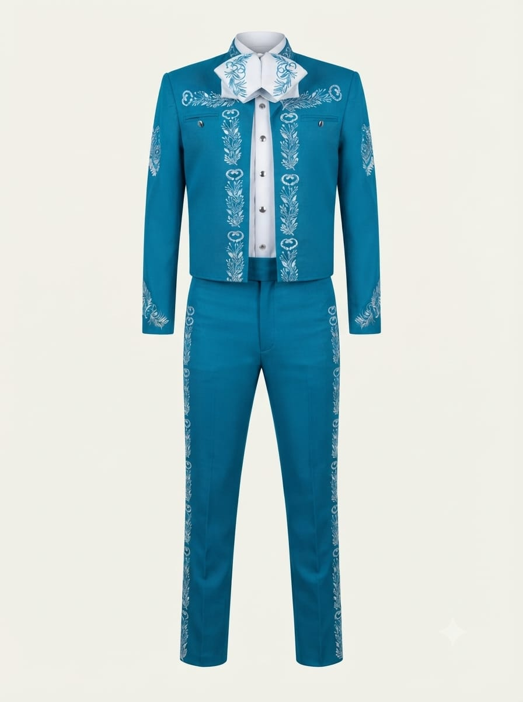
imperialConfeccionado en paño fino Azul majenta. Presenta finos bordados de flores charras en hilo metalico plateado sobre chaquetilla, chaleco, solapas y pantalon. Incluye herrejeria dorada.
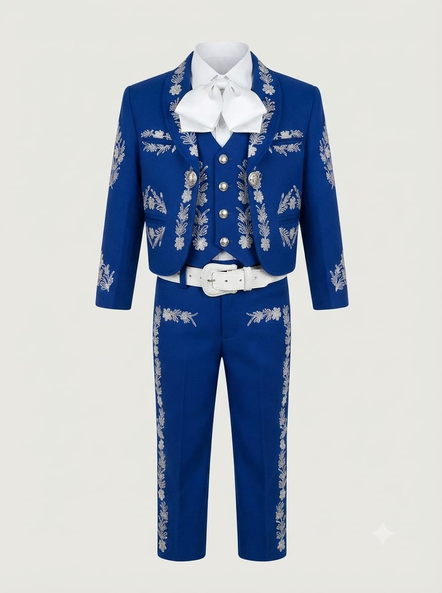
ImperialConfeccionado en paño fino Azul . Presenta finos bordados de flores charras en hilo Blanco sobre chaquetilla, chaleco, solapas y pantalon. Incluye herrejeria dorada.
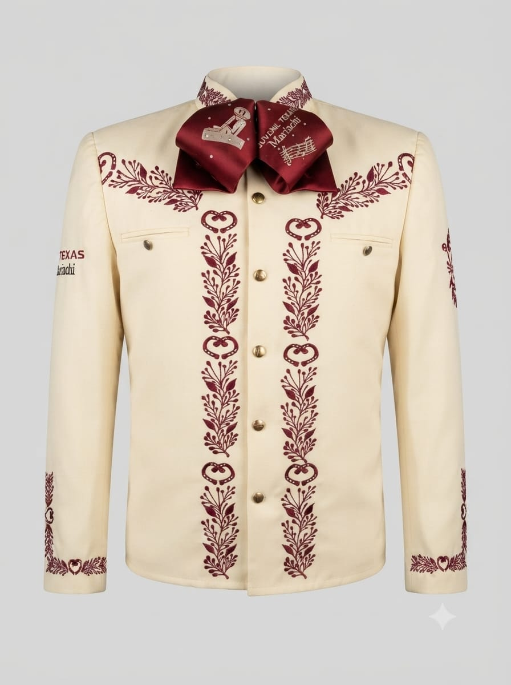
ClásicaCamisola charra indispensable para todo mariachi. Tela de textura impecable que facilita el planchado y previene arrugas durante las actuaciones con bordados hilo vinotinto.
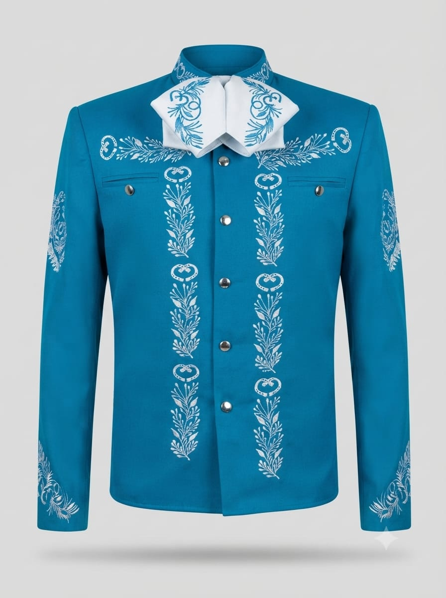
ClásicaCamisola charra indispensable para todo mariachi. Tela de textura impecable que facilita el planchado y previene arrugas durante las actuaciones con bordados hilo Blanco.
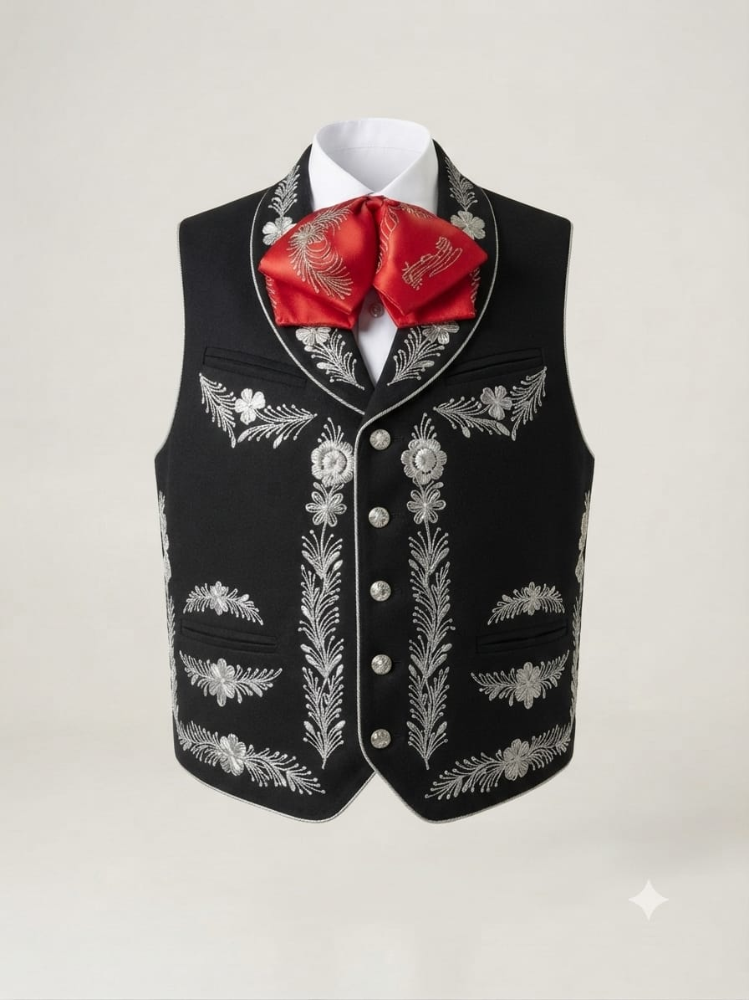
imperialChaleco individual para solistas o directores de agrupación. Bordado Elaborado en brocado plateado con motivos barrocos sobre fondo negro y hebilla trasera de ajuste.
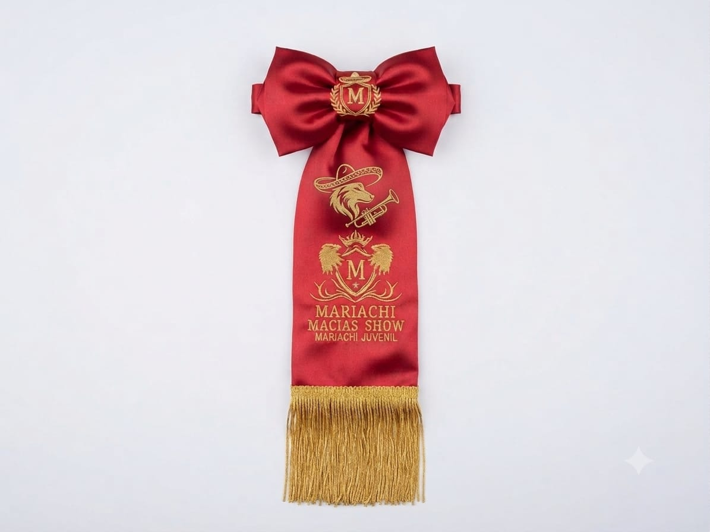
imperialElaborado en satín fino rojo de alta calidad con detalles personalizados. Presenta elegantes bordados en hilo metálico dorado con emblema central, heráldica y grecas artesanales. Un diseño distinguido que mantiene la tradición charra
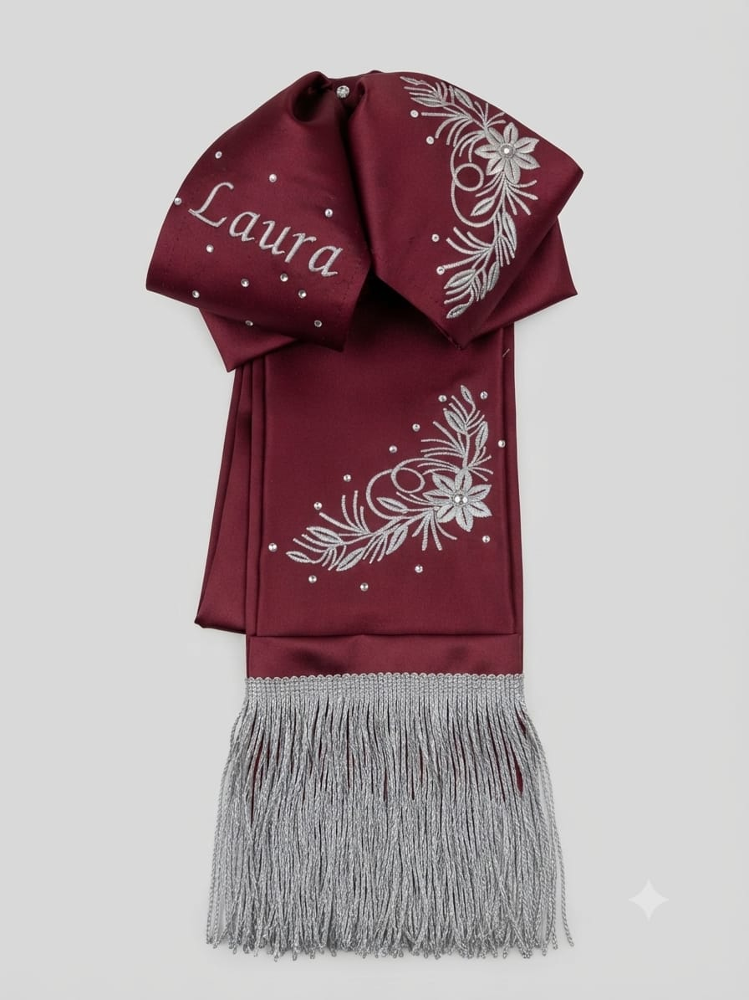
imperialElaborado en satín fino vinotinto de alta calidad con detalles personalizados. Presenta elegantes bordados en hilo metálico plata con emblema central, heráldica y grecas artesanales. Un diseño distinguido que mantiene la tradición charra
En Wolf Textil nos apasiona el arte de la confección de trajes de alta gama. Combinamos tonos armoniosos con colores a tu gusto en todos nuestros trajes de mariachi de corte impecable. Seleccionamos cuidadosamente paños, casimires y telas de algodón, complementados con finos bordados en hilos metálicos e inoxidables. Ofrecemos confección sobre medida para músicos solistas y dotaciones completas para mariachis en Colombia.
Confeccionamos prendas individuales y vestuarios completos con envíos a nivel nacional.
+57 313 252 0761
Despachos a toda Colombia